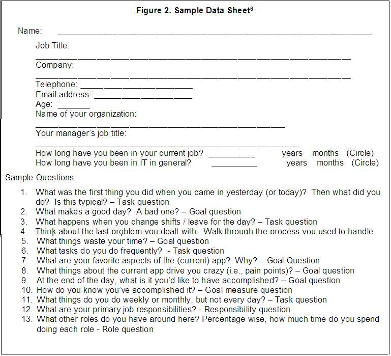

Use multiple sources to gather initial information about the intended user categories of the new
system
Gather any available information on market segmentation, anticipated user categories, and known user categories of the
legacy solution. For solutions being developed for the Internet or an extranet, recruiting screeners used in prior
market or user studies to identify participants for focus groups or usability evaluations often implicitly help define
user types. Potential sources of information:
-
Existing Use Cases, Usability Requirements, and Accessibility Requirements from the previous
system: Often times, these work products are being created iteratively and in parallel with the User
Profiles, but if they already do exist, use cases and other user requirements documentation contain preliminary
information about which different categories of users are going to work with the system.
-
Human Resources Department: Human Resources may have the information needed for determining some
of the characteristics of each user category.
-
Help Desk or Support Groups: This group may have reporting documentation that sometimes provides
insight into the actual skills vs. the assumed skill skills of the intended user population.
-
User Management: Managers can provide profiles of the skills needed for employees reporting to
them.
-
Marketing Groups: The client’s marketing team should have a clear understanding of the users for
whom the solution is intended.
-
User Satisfaction Surveys – Sometimes a review of existing data from previous customer or employee surveys
will include initial information regarding various user category attributes.
-
Business Process Re-engineering or Business Transformation Reports: These studies can give insight
into existing categories of users in the organization, and the intended roles for users of the new system.
Create initial user profiles
Based on the information collected in Step 1, create a two dimensional matrix (using Excel or another spreadsheet
tool). In the first column, list the following User Profile Attributes and their elements from Section 3.3:
-
Prior knowledge and experience
-
Physical characteristics
-
Social and physical environment
-
Cognitive characteristics
-
Current job characteristics and roles
-
Goals
Starting with the second column, list in the first row of the spreadsheet too, the candidate user profiles identified
from Step 1.
In the row cells starting in column 2, enter values for each of the attribute elements that best reflect the results of
the data collected in Step 1 as it pertains to each potential user profile. It is at this point that you may decide
that
-
Certain user profile attributes may not be applicable or relevant to the new solution, and/or:
-
An identified candidate user profile, is not sufficiently different from another
-
A new candidate user profile exists, that is uniquely different than those already identified.
The matrix should be updated to reflect the additions or deletions of candidate user profiles and/ or specific user
profile attributes.
Review and validate user profiles with client team
Review the initial user profiles with the client team, obtain feedback on candidate user profiles and their attributes
and elements and update the user profiles based on this feedback.
Further define user profiles through contextual user interviews
In this step, through interviews, you will be validating and refining your findings to date as well as collecting Job
Responsibility and Goal information from actual end users.
Interview a variety of potential users based on the initial user profile as a starting point. Ideally, interviews are
conducted in-person and in the user’s work environment so the project team can observe not only the user but their work
context. By observing the user in their work environment, the team captures the possible ways users behave when trying to
accomplish their goals. The example in Figure 2 below shows a sample data collection format:
|
Figure 2. Sample Data Sheet

|
Refine the user profiles
In this step, you will complete the final draft of the user profiles. Update the user profiles based on the information
collecting in the interviews. You will revise the Candidate User Profiles on the basis of uniqueness in terms of tasks,
goals, skills, and other characteristics to eliminate redundancy or add additional user profiles, depending on what is
learned during the interviews.
Publish the draft for client feedback; and make a final update of the matrix based on their input.
Create the personas
Once sign-off has been obtained on the user profiles, the team will develop one or more personas for each user profile.
The number of unique personas to develop is a judgment call on the part of the design team, but for each user profile,
it is typical to develop at least one primary persona. Usually a user profile can be illustrated with just a handful of
(no more than 1-4) personas for each user-interface being developed, depending on the need for multiple primary
personas and then optionally secondary, supplemental, and negative personas (see below for definitions).
Steps:
-
Identify “primary personas” first -- these are the key user profile for whom the solution is being designed.
Primary personas represent that user profile that must be satisfied by the design.
-
Next, determine whether or not each user profile can be represented with a single persona or, whether it makes
sense to use multiple personas based on a key differentiating element that aligns with subcategories within the
user profile (See discussion of “College Joe” and “Suzie Seasoned-Citizen” above).
-
Create a fictitious name for your persona. - Use a random name generator, such as
http://www.kleimo.com/random/name.cfm to create the name.
d) Next, use Google images or one of any number of royalty-free sites to select a headshot that represents your
persona. For example, Comstock Images www.comstock.com provides
royalty free headshot of men and women, as does Getty.com. Head shots of men:
http://www.comstock.com/web/search/categories/CategoriesThumbnails.asp?catid=440&cat=&page=1
Head shots of women:
http://www.comstock.com/web/search/categories/CategoriesThumbnails.asp?catid=153&cat=&page=1
In addition, Getty Images provides royalty-free headshots.
http://creative.gettyimages.com/source/home/homeCreative.aspx
-
Create a telling quote attributable to the persona that best communicates qualities that reflect this individual.
This often can be something recorded during information gathering sessions with real end users, or one that
captures how a representative individual from that particular group approaches work.
-
Create a narrative of the user’s roles and goals – A paragraph or two about the persona’s roles and
responsibilities that have influence on the downstream design activities.
-
Next, develop a “day in the life” background story - As mentioned above, this is conversationally written and
touches upon key attributes of the user profile including responsibilities, goals and a description of one or two
key tasks the user accomplishes during the day that helps him or her reach their end goals. In writing the
background story, the goal is to bring this person “to life”, so that the design team can use the persona
documentation to keep them better focused on the design and the needs of the end user.
-
Next enumerate goals that the persona may have when interacting with the solution:
-
-
End goals – The benefits obtained from using the solution. (Required)
-
Experience goals - How does the user want to feel when interacting with the web site or application (for
example, an online banking customer may wish to feel “secure” when transacting business on a self-service
banking web site). (Optional)
-
Life goals – If applicable to the design of the solution. For example, a life goal of a high school teacher
may be “retire by 52” and this may have implications for the design of a financial planning tool for 403B
plan participants. (Optional)
-
Determine whether it make sense to create a secondary persona type to help focus the design team. For example,
consider an engagement where you are contracted to design a user-interface for a retail banking call center staff.
As part of this effort, you are also responsible for creating a design that supports their technical support team.
In your preliminary data collection, you learn that besides a few supplemental functions to allow them to provide
technical assistance as needed, the technical support team has almost all of the same requirements as the call
center staff. In this case, the call center staff persona is the primary persona, and the technical team persona is
the secondary persona since the secondary persona's user-interface needs are virtually completely addressed by
meeting the needs of the call center staff.
-
It may also make sense to create other persona types to help orient the design team:
-
-
Supplemental persona - Personas that are neither primary nor secondary, and those whose goals are satisfied
by accomplishing the goals of the primary personas. (Optional). In the call center example, a supplemental
persona could capture the end customer – the one whose needs are being satisfied by the call center staff.
-
Negative persona – created to manage scope creep, this persona captures the type of user for whom the
solution is not being designed for. It helps level set the design team when there are questions about
features that should be added to the user-interface. (Optional, but highly recommended if there is a scope
creep issue or continuing confusion about who the primary users will be)
-
Review draft personas with the team at large, obtain their feedback and refine the personas based on their
feedback.After sign-off has been obtained on the one-page persona descriptions, create a one page summary matrix
that summarizes each of the personas along the following attributes: Persona type, Picture, name, quote,
responsibilities, and goals. This will serve as a cheat sheet for the design team when referring to the personas in
the downstream design efforts.
|